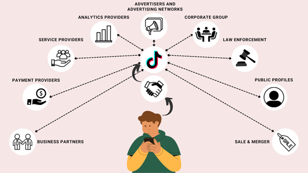
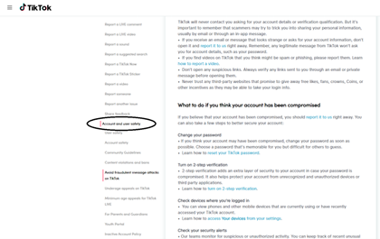

TikTok Privacy and Policy
What happens to data after it is given?

Image by Beritan, Kevin Claude
Businesses ads on the platform
TikTok shares users’ data with the following selected third parties:
- Business Partners - registering to TikTok using a social network account such as google, facebook, twitter, etc will also allow TikTok to use the information on the specific social network such as the app ID, access token and the referring URL. Plus, allowing third-party service access users’ accounts will also allow them to use said information. However, users still have the choice as to which information they will allow to be shared.
- Payment Providers - when purchasing in-app currency such as “Coins” and other transactions also will share data with the relevant payment provider to facilitate this transactions. TikTok will also share a transaction ID to enable them to identify users and credit their accounts with the correct value in coins upon payment.
- Service Providers - TikTok provides information and content to service providers who support their business, such as cloud service providers, service providers of content moderation services to make the Platform a safe and enjoyable place, and service providers who help them market the Platform.
- Analytics Providers - In addition to helping them serve targeted advertisements, their third-party analytics providers also assist them in optimizing and improving the Platform.
- Advertisers and Advertising Networks - They share information with advertisers and third-party measurement companies to show how many which users of the Platform have viewed or clicked on an advertisement. They later share user device ID with measurement companies so that TikTok can connect user activity on the Platform with user activity on other websites; we then use this information to show you advertisements that may be of interest to you.
- TikTok Corporate Group - In order to provide the Platform, TikTok may also share user information with other members, subsidiaries, or affiliates of their business group. This includes optimizing the Platform, preventing unauthorized usage, and assisting users.
-
Law Enforcement - If required by law to do so or if it is reasonably necessary to do so, TikTok will share user information with law enforcement, government agencies, or other organizations. For cases such as:
- “comply with legal obligation, process or request;”
- “enforce Terms of Service and other agreements, policies, and standards, including investigation of any potential violation thereof;”
- “detect, prevent or otherwise address security, fraud or technical issues; or”
- “protect the rights, property or safety of us, our users, a third party or the public as required or permitted by law (including exchanging information with other companies and organisations for the purposes of fraud protection and credit risk reduction).”
- Public Profiles - Setting TikTok profile into public automatically lets every other user see user's contents, shared by friends and followers as well as third parties such as search engines, content aggregators and news sites. However, matters as such can be changed through app settings.
-
Sale or Merger -TikTok will also disclose informations to third-parties:
- “in the event that we sell or buy any business or assets (whether a result of liquidation, bankruptcy or otherwise), in which case we will disclose your data to the prospective seller or buyer of such business or assets; or”
- “if we sell, buy, merge, are acquired by, or partner with other companies or businesses, or sell some or all of our assets. In such transactions, user information may be among the transferred assets.”
Risk of clicking a fishy link
In TikTok’s support site, under the “Safety” section inlcludes lists of assistance for users if they want to commit a report, or request for anything relevant to their account safely. However, regards to security against suspicious links aren't included. From a blog article authored by Vigderman and Turner (2022), they assure the safety of TikTok which includes them saying:
“As far as social-media platforms go, TikTok is safe — but there are some caveats! The app doesn’t contain malware and it doesn’t steal its users’ personal information, but that’s not to say using TikTok doesn’t come with any risks. Our home is safe, but we still use a home security system. In the same manner, TikTok is safe, but you should still exercise caution when using it — especially since there are ill-intentioned users who are on TikTok to take advantage of others.”
Simply put, TikTok only holds responsibility in securing personal data provided by users, but not over the malicious external activities making their way into the platform and try to infiltrate information, or rather scam users. It is rather left to the users on how will they respond to these once they fall into encounter with such.